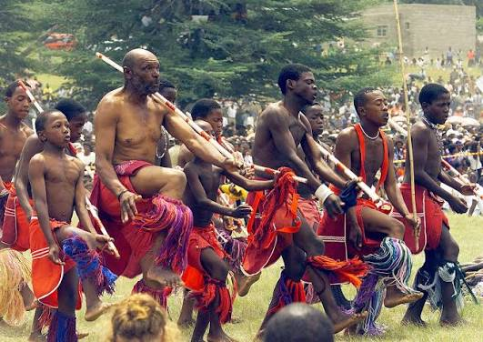
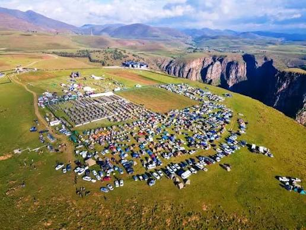

The Maletsunyane Cultural And Adventure Festival was created to promote tourism in lesotho by showcasing the country's natural beauty and cultural heritage.The festival takes place near a famous Maletsuyane Falls,one of the highest single drop waterfalls in Southern Africa.
The eveny promotes Basotho traditions including traditional music, dance, food, and handcrafts.It also encourages adventure tourism activities such as abseiling, hiking, and pony trekking